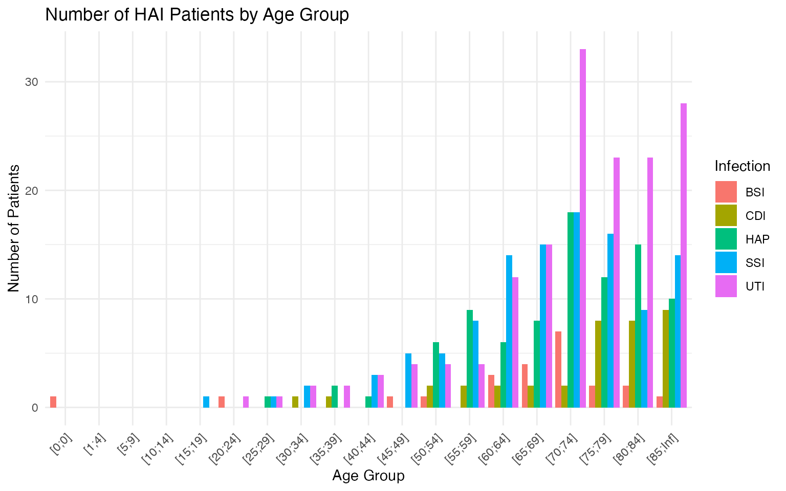

Introduction
Healthcare-associated infections (HAIs) are infections that patients acquire while receiving medical treatment in a hospital or other healthcare facility. The HAIgermany package provides datasets and tools to explore and visualize HAIs observed in the ECDC Point Prevalence Survey (2011–2012). This vignette demonstrates how to:
- Load and inspect the included datasets
- Understand what each variable represents
- Launch the Shiny app for interactive exploration
Installation
#If not yet installed:
install.packages("remotes")
remotes::install_github("ETC5523-2025/assignment-4-packages-and-shiny-apps-NathalieAaes/HAIgermany")Then load the package:
Exploring the Datasets
The package includes two key datasets derived from the ECDC PPS data:
-
num_hai_patients_tidyCounts of patients who actually had a healthcare-associated infection (HAI), broken down by age group and infection type. -
mccabe_scores_distr_tidyCounts of all patients at risk for each infection type, by age group.
For example:
- Surgical site infections (SSI) are only relevant for patients who underwent surgery
- Urinary tract infections (UTI) are only relevant for patients with a urinary catheter
Let’s explore them:
head(num_hai_patients_tidy)
#> AgeGroup TotalCases Infection
#> 1 [0;0] 0 HAP
#> 2 [10;14] 0 HAP
#> 3 [15;19] 0 HAP
#> 4 [1;4] 0 HAP
#> 5 [20;24] 0 HAP
#> 6 [25;29] 1 HAP
head(mccabe_scores_distr_tidy)
#> AgeGroup PatientsAtRisk Infection
#> 1 [0;0] 39 BSI
#> 2 [0;0] 62 HAP
#> 3 [0;0] 28 UTI
#> 4 [0;0] 14 SSI
#> 5 [0;0] 2 CDI
#> 6 [1;4] 17 BSIUnderstanding the Variables
num_hai_patients_tidy
-
AgeGroupAge range of the patients -
InfectionType of HAI (e.g. SSI, UTI, BSI, etc.) -
TotalCasesNumber of patients with that HAI in the age group
mccabe_scores_distr_tidy
-
AgeGroupAge range of the patients -
InfectionType of HAI the patients were at risk of developing -
PatientsAtRiskTotal number of patients at risk for that HAI in the age group
Comparing the Two Datasets
summary(num_hai_patients_tidy$TotalCases)
#> Min. 1st Qu. Median Mean 3rd Qu. Max.
#> 0.000 0.000 1.000 4.358 6.000 33.000
summary(mccabe_scores_distr_tidy$PatientsAtRisk)
#> Min. 1st Qu. Median Mean 3rd Qu. Max.
#> 0.00 13.00 36.00 93.45 112.50 513.00You’ll notice that mccabe_scores_distr_tidy generally
has much higher counts - this is because it includes all patients at
risk, not just those who became infected.
Visualizing Age Distributions
You can use ggplot2 to explore the age trends:
library(ggplot2)
ggplot(num_hai_patients_tidy, aes(x = AgeGroup, y = TotalCases, fill = Infection)) +
geom_col(position = "dodge") +
labs(
title = "Number of HAI Patients by Age Group",
x = "Age Group",
y = "Number of Patients"
) +
theme_minimal() +
theme(axis.text.x = element_text(angle = 45, hjust = 1))